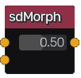

sdMorph node¶
The sdMorph node generates a signed distance image obtained by mixing two input 2D signed distance functions.
Inputs¶
The sdMorph node accepts 2 inputs in signed distance function format.
Outputs¶
The sdMorph node generates a signed distance function of the combination of its inputs.
Parameters¶
The sdMorph node accepts accepts the mix factor as parameter.